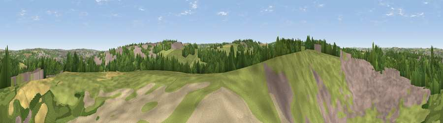

Viewpoint near Stella
#25223 in England · top 53% of its area beats it · near Stella · access?Where it is
The exact computed spot (NZ 16225 62625). Click the marker for map links.
Public access: no public right of way or access land is recorded at this exact spot — it may be on private land. Computed from Natural England's CRoW access layer and OpenStreetMap rights of way — not the legal definitive map. Always verify locally.
The view, rendered

A 360° render of this exact spot computed from the terrain model, tree cover and land cover — summer colours, afternoon light, calibrated against photographs of famous viewpoints. Real trees, hedges and buildings will differ in detail.
The panorama
Grey silhouette: terrain skyline in each direction (720 bearings, Earth curvature and refraction included). Dashed green: skyline with trees (+15 m) and buildings (+8 m) as obstacles. Blue strip: how far the ground is visible on each bearing.
Where the view opens
Wedge length = distance to the farthest visible ground on that bearing (vegetation-aware). Rings at 10, 25 and 50 km.
What fills the view
39% grassland · 29% built-up · 23% woodland · 7% cropland
Angular shares of the visible panorama (visual magnitude), not map area. Landscape diversity 0.56 (0–1 Shannon).
Key numbers
More beautiful places nearby
The staircase of upgrades: each row has a higher view potential than everything closer. Driving times are estimates from straight-line distance, calibrated against real road routing — check an actual route before setting out.
| Place | Direction | Drive | Score |
|---|---|---|---|
| Viewpoint near High Spen | SSW · 3 km | ~7 min | 48.2 |
| Viewpoint near Blucher | NNE · 4 km | ~8 min | 55.1 |
| Viewpoint near Greenside | WSW · 4 km | ~10 min | 74.2 |
| Viewpoint near Burnopfield | SSE · 5 km | ~12 min | 75.4 |
| Viewpoint near Sunniside | SE · 8 km | ~15 min | 77.6 |
| Pontop Pike | S · 10 km | ~19 min | 77.8 |
| Viewpoint near Rothbury | NNW · 38 km | ~57 min | 81.1 |
| Dove Crag | NNW · 38 km | ~57 min | 82.3 |
54.95800, -1.74816 · source: screening · position refined by local search. Computed location — check access rights before visiting.